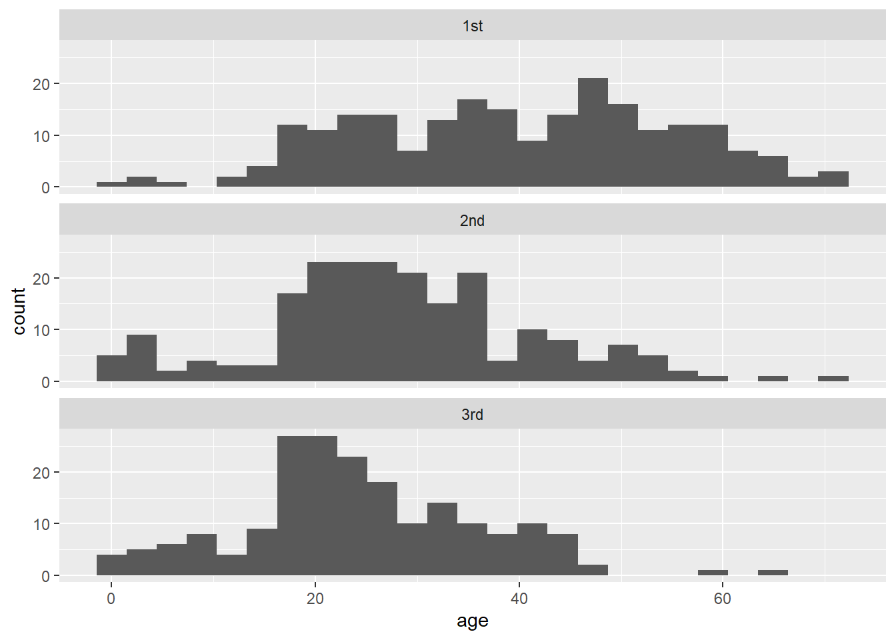
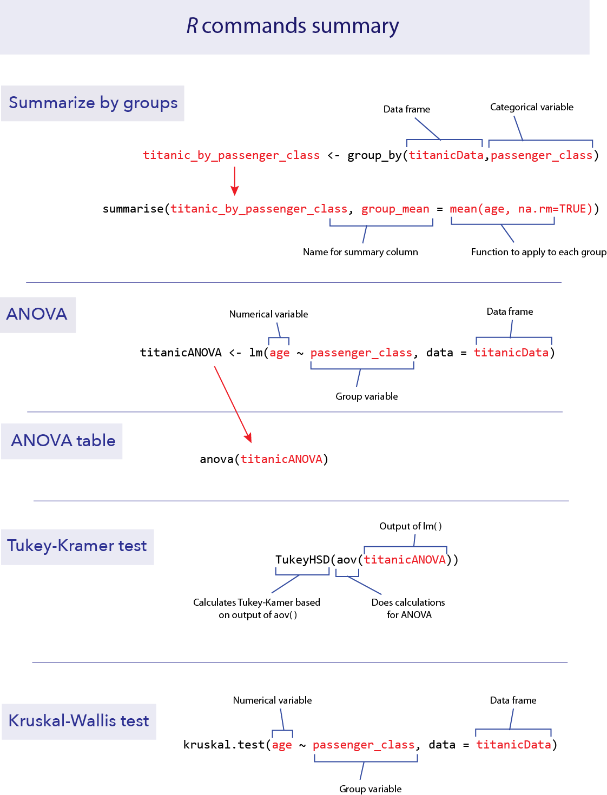

# Load data
# NB your file path may be different than mine
titanicData <- read.csv("data/titanic.csv" )Lab 07 ANOVA
1 Objectives
Use
Rto perform analysis of variance (ANOVA) to compare the means of multiple groupsPerform Tukey-Kramer tests to look at unplanned contrasts between all pairs of groups
Use Kruskal-Wallis tests to test for difference between groups without assumptions of Gaussianity
Compare the variances of two groups using Levene’s test
Data for all labs (unzip to your working directory)
2 Start a script!
For this and every lab or project, begin by:
starting a new script
create a good header section and table of contents
save the script file with an informative name
set your working directory
Aim to make the script useful as a future reference for doing things in R - this will come in handy for projects and assessments!
3 Setup
For the examples in this lab, we will be using the Titanic data set. We’ll group passengers by the passenger class they travelled under (a categorical variable) and ask whether different passenger classes differed in their mean age (a numerical variable).
First, load the data.
Let’s first look at the data to get a sense of how well it fits the assumptions of ANOVA. Multiple stacked histograms are useful for this purpose. We can use ggplot() and facets to make this plot (as we saw in a previous lab):
if(!require("ggplot2")) install.packages("ggplot2")
ggplot(titanicData, aes(x = age)) +
geom_histogram(bins = 25) +
facet_wrap(~ passenger_class, ncol = 1) 
These data look sufficiently Gaussian and with similar spreads that ANOVA would be appropriate.
To confirm these visual impressions, it would be useful to construct a table of the means and standard deviations of each group. There are numerous ways to do this in R, but one of the neatest is to use functions from the package dplyr. If you have not done so yet, install the dplyr package from the “Packages” tab in RStudio. Then load the dplyr package with library().
4 dplyr()
if(!require("dplyr")) install.packages("dplyr")4.1 group_by()
The package {dplyr} has several useful features for manipulating data sets. For our current purposes, we will find two functions particularly useful: group_by() and summarise(). These two functions are well named and work together well, first to organize the data by groups, and second to summarize the results for each group. These functions are alternatives to the base R function aggregate().
First, use group_by() to organize your data frame by the appropriate grouping variable. For example, here we want to organize the titanicData by passenger_class:
titanic_by_passenger_class <- group_by(titanicData,passenger_class)4.2 summarise()
After applying group_by() to a data frame, we can summarize the data using summarise(). With summarise(), we can apply any type of function that summarizes data (e.g. mean(), median(), var(), etc.), and receive that summary group by group. For example, to calculate the mean age of each passenger_class, we can use:
summarise(titanic_by_passenger_class,
group_mean = mean(age, na.rm = TRUE))# A tibble: 3 × 2
passenger_class group_mean
<chr> <dbl>
1 1st 39.7
2 2nd 28.3
3 3rd 24.5As input, we give the name of the grouped table created by group_by() and the function we want to apply to each group. In this case we used mean(age, na.rm=TRUE). “group_mean” is a name we give to that summary variable (it could have been any name we wanted). The output looks like a table and includes the names of the groups being summarized. (A “tibble” is not how New Zealanders spell “table”, but is a type of table like a data frame.) “3 x 2” here refers to the number of rows x columns in the “tibble” output.
We can give summarise() many summary functions at once, and it will create columns in the output table for each one. For example, if we want to output both the mean and the standard deviation, we can add group_sd = sd(age, na.rm=TRUE) to the function above.
summarise(titanic_by_passenger_class,
group_mean = mean(age, na.rm = TRUE),
group_sd = sd(age, na.rm = TRUE))# A tibble: 3 × 3
passenger_class group_mean group_sd
<chr> <dbl> <dbl>
1 1st 39.7 14.9
2 2nd 28.3 13.0
3 3rd 24.5 11.3Note that the standard deviations are very similar, which means that these data fit the equal variance assumption of ANOVA.
5 ANOVA
Analysis of variance (or ANOVA) is not quite as simple in R as one might hope. Doing ANOVA takes at least two steps. First, we fit the ANOVA model to the data using the function lm(). This step carries out a bunch of intermediate calculations. Second, we use the results of first step to do the ANOVA calculations and place them in an ANOVA table using the function anova(). The function name lm() stands for “linear model”; this is actually a very powerful function that allows a variety of calculations. One-way ANOVA is a type of linear model.
5.1 lm()
The function lm() needs an R formula and a data frame object as arguments. The formula is a statement specifying the “model” that we are asking R to fit to the data. A model formula always takes the form of a response variable, followed by a tilde (~), and then at least one explanatory variable. In the case of a one-way ANOVA, this model statement will take the form
numerical_variable ~ categorical_variable
For example, to compare differences in mean age among passenger classes on the Titanic, this formula is
age ~ passenger_class
This formula tells R to “fit” a model in which the ages of passengers are grouped by the variable passenger_class.
The name of the data frame containing the variables stated in the formula is the second argument of lm().
data = your_actual_data_obeJct_name_may_vary (TM)
Finally, to complete the lm() command, it is useful to save the intermediate results by assigning them to a new object, which anova() can then use to make the ANOVA table. For example, here we assign the results of lm() to a new object named “titanicANOVA”:
titanicANOVA <- lm(age ~ passenger_class, data = titanicData)5.2 anova()
The function anova() takes the results of lm() as input and returns an ANOVA table as output:
anova(titanicANOVA)Analysis of Variance Table
Response: age
Df Sum Sq Mean Sq F value Pr(>F)
passenger_class 2 26690 13344.8 75.903 < 2.2e-16 ***
Residuals 630 110764 175.8
---
Signif. codes: 0 '***' 0.001 '**' 0.01 '*' 0.05 '.' 0.1 ' ' 1This table shows the results of a test of the null hypothesis that the mean ages are the same among the three groups. The P-value is very small, and so we reject the null hypothesis of no differences in mean age among the passenger classes.
5.3 Tukey’s HSD (Honestly Significant Difference)
A single-factor ANOVA can tell us that at least one group has a different mean from another group, but it does not inform us which group means are different from which other group means. A Tukey-Kramer test lets us test the null hypothesis of no difference between the population means for all pairs of groups. The Tukey-Kramer test (also known as a Tukey Honestlt Significance Test, or Tukey’s HSD), is implemented in R in the function TukeyHSD().
We will use the results of an ANOVA done with lm() as above, that we stored in the variable titanicANOVA. To do a Tukey-Kramer test on these data, we need to first apply the function aov() to titanicANOVA, and then we need to apply the function TukeyHSD() to the result. We can do this in a single command:
TukeyHSD(aov(titanicANOVA)) Tukey multiple comparisons of means
95% family-wise confidence level
Fit: aov(formula = titanicANOVA)
$passenger_class
diff lwr upr p adj
2nd-1st -11.367459 -14.345803 -8.389115 0.0000000
3rd-1st -15.148115 -18.192710 -12.103521 0.0000000
3rd-2nd -3.780656 -6.871463 -0.689849 0.0116695The key part of this output is the table. It shows:
The difference between the means of groups (for example, the 2nd passenger class compared to the 1st passenger class)
The 95% confidence interval for the difference between the corresponding population means. (“lwr” and “upr” correspond to the lower and upper bounds of that confidence interval for the difference in means.)
The P-value from a test of the null hypothesis of no difference between the means (the column headed with “p adj”). In the case of the Titanic data, P is less than 0.05 in all pairs, and we therefore reject every null hypothesis. We conclude that the population mean ages of all passenger classes are significantly different from each other.
6 Kruskal-Wallis test
A Kruskal-Wallis test is a non-parametric analog of a one-way ANOVA. It does not assume that the numeric variable has a Gaussian distribution for each group.
To run a Kruskal-Wallis test, use the R function kruskal.test(). The input for this function is the same as we used for lm() above. It includes a model formula statement and the name of the data frame to be used.
kruskal.test(formula = age ~ passenger_class,
data = titanicData)
Kruskal-Wallis rank sum test
data: age by passenger_class
Kruskal-Wallis chi-squared = 116.08, df = 2, p-value < 2.2e-16You can see for the output that a Kruskal-Wallis test also strongly rejects the null hypothesis of equality of age for all passenger class groups with the Titanic data.
7 R commands summary

8 Exercises
8.1
The European cuckoo does not look after its own eggs, but instead lays them in the nests of birds of other species. Previous studies showed that cuckoos sometimes have evolved to lay eggs that are colored similarly to the host bird species. Is the same true of egg size? Do cuckoos lay eggs similar in size to the size of the eggs of their hosts? The data file cuckooeggs.csv contains data on the lengths of cuckoo eggs laid in the nests of a variety of host species. Here we compare the mean size of cuckoo eggs found in the nests of different host species.
Plot a multiple histogram showing cuckoo egg lengths by host species.
Calculate a table that shows the mean and standard deviation of length of cuckoo eggs for each host species.
Look at the graph and the table. For these data, would ANOVA be a valid method to test for differences between host species in the lengths of cuckoo eggs in their nests?
Use ANOVA to test for a difference between host species in the mean size of the cuckoo eggs in their nests. What is your conclusion?
Assuming that ANOVA rejected the null hypotheses of no mean differences, use a Tukey-Kramer test to decide which pairs of host species are significantly different from each other in cuckoo egg mean length. What is your conclusion?
8.2
The pollen of the maize (corn) plant is a source of food to larval mosquitoes of the species Anopheles arabiensis, the main vector of malaria in Ethiopia. The production of maize has increased substantially in certain areas of Ethiopia recently, and over the same time period, malaria has entered in to new areas where it was previously rare. This raises the question, is the increase of maize cultivation partly responsible for the increase in malaria?
One line of evidence is to look for an association between maize production and malaria incidence at different geographically dispersed sites (Kebede et al. 2005). The data set “malaria vs maize.csv” contains information on several high-altitude sites in Ethiopia, with information about the level of cultivation of maize (low, medium or high in the variable maize_yield) and the rate of malaria per 10,000 people (incidence_rate_per_ten_thousand).
Plot a multiple histogram to show the relationship between level of maize production and the incidence of malaria.
ANOVA is a logical choice of method to test differences in the mean rate of malaria between sites differing in level of maize production. Calculate the standard deviation of the incidence rate for each level of maize yield. Do these data seem to conform to the assumptions of ANOVA? Describe any violations of assumptions you identify.
Compute the log of the incidence rate and redraw the multiple histograms for different levels of maize yield. Calculate the standard deviation of the log incidence rate for each level of maize yield. Does the log-transformed data better meet the assumptions of ANOVA than did the untransformed data?
Test for an association between maize yield and malaria incidence.
8.3
Animals that are infected with a pathogen often have disturbed circadian rhythms. (A circadian rhythm is an endogenous daily cycle in a behavior or physiological trait that persists in the absence of time cues.) Shirasu-Hiza et al. (2007) wanted to know whether it was possible that the circadian timing mechanism itself could have an effect on disease. To test this idea they sampled from three groups of fruit flies: one “normal”, one with a mutation in the timing gene tim01, and one group that had the tim01 mutant in a heterozygous state. They exposed these flies to a dangerous bacteria, Streptococcus pneumoniae, and measured how long the flies lived afterwards, in days. The date file “circadian mutant health.csv” shows some of their data.
Plot a histogram of each of the three groups. Do these data match the assumptions of an ANOVA?
Use a Kruskal-Wallis test to ask whether lifespan differs between the three groups of flies.
Harper Adams Data Science

This module is a part of the MSc in Data Science for Global Agriculture, Food, and Environment at Harper Adams University, led by Ed Harris.